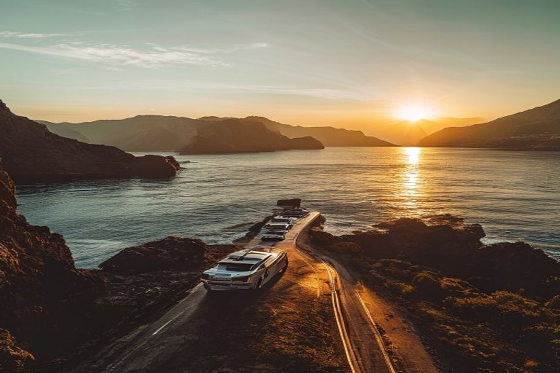
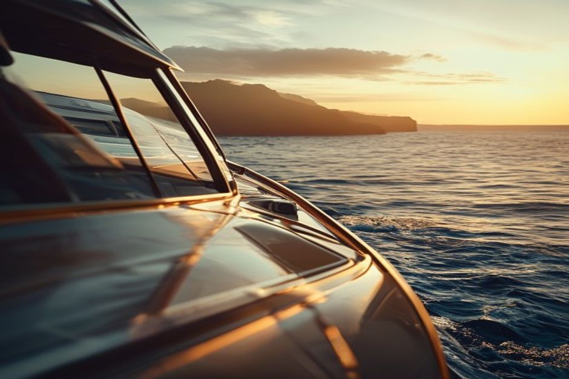

Every summer, Madeira's mountain roads fill with the sound of rally cars weeks before anyone mentions it to visitors. Here's what the Rali da Madeira actually is, when it happens in 2026, and what it means for your trip if you're staying anywhere near Funchal.
When is the Rali da Madeira in 2026?
The 67th Rali da Madeira runs from Thursday 30 July to Saturday 1 August 2026. Shakedown testing takes place on 31 July, between 8:30 and 11:00am, on Estrada dos Cardais between Água de Pena and Santo da Serra and on the ER234 — a warm-up session where teams get a final look at car setup before the timed stages begin. The event lands right in the middle of Madeira's celebrations marking 50 years of the island's autonomy, which gives this edition a bigger local following than usual.

What is the Rali da Madeira, exactly?
It's a tarmac rally raced on public mountain roads, and one of the most technical events on the European calendar. The Rali da Madeira carries FIA status as part of the European Rally Trophy, and its special stages are famous among drivers for being narrow, fast and relentlessly twisty, climbing and dropping through the island's steep interior. For 2026, organisers have reshaped the route to concentrate competition on the high mountain ranges (serras) of Funchal, Santa Cruz and Santana — around 15 timed stages totalling roughly 205km.
Why is it also called the Madeira Wine Rally?
Because that was its name for decades — and locally, it still is. From 2025 onward the event's official title changed to "Rali da Madeira," dropping the wine reference to comply with FIA and international motorsport rules restricting alcohol branding in sport. If you hear someone in Funchal call it the Madeira Wine Rally, or Rali Vinho da Madeira, they mean the same event.
Where can you watch it, and is it free?
Yes, watching is free along most of the route, and this year it's meant to be easier, not harder. The 2026 course deliberately moves several stages further from residential zones and adds new, marshalled spectator areas — a response to safety concerns from past editions. The event traditionally opens with a superspecial stage run along Avenida do Mar in central Funchal in the late afternoon, which is the most accessible stage for anyone without a car, since you can simply walk down to the seafront. The mountain stages near Santo da Serra and Santana require more planning: arrive early, follow the official road-closure map once it's published closer to the date, and stick to the areas marshals point you toward — these roads have real drop-offs and closing gates are enforced for a reason.
Will the rally affect your holiday plans?
Only if you're driving through the affected mountain roads on the specific days and hours they're closed. The organisers publish a detailed road-closure schedule ahead of each edition because closures are localised to the timed sections and the villages directly around them — Funchal's coastal roads, the marina and most of the south coast operate as normal outside the Avenida do Mar superspecial window. If your accommodation is near Santo da Serra, Camacha or Santana, expect some rerouting on 31 July and 1 August in particular.
What's the best way to enjoy Madeira during rally weekend?
Take it to the water. The rally's stages are all inland and up in the serras, which leaves the coastline completely untouched — no road closures, no crowds, no engine noise. A private boat trip with Chifbay departs from Funchal Marina, well clear of the rally's footprint, and covers the cliffs of Cabo Girão, hidden coves and a proper Atlantic sunset while the mountains above are full of spectators and diesel fumes. It's also simply a good excuse: locals treat rally weekend as a big deal, and a quiet afternoon on the sea is the calmest possible counterpoint to it.
Is it worth watching if you're not a motorsport fan?
Yes, if only for an hour. Even without following rallying closely, standing streetside as modern rally cars come through a closed section of Avenida do Mar at speed, headlights cutting through the evening, is a genuinely dramatic five minutes — and it's part of what the island itself treats as an annual landmark, alongside its festivals and harvest events. Pair an early evening at the superspecial with dinner in the Zona Velha and you've got a full, very Madeiran night without needing to chase the mountain stages at all.

The rally owns the mountains for three days a year. The coast stays exactly as it always is.
If you're in Madeira for the last days of July 2026, the Rali da Madeira is worth building an evening around — just plan your route, respect the closures, and remember the sea is always the calmer option.